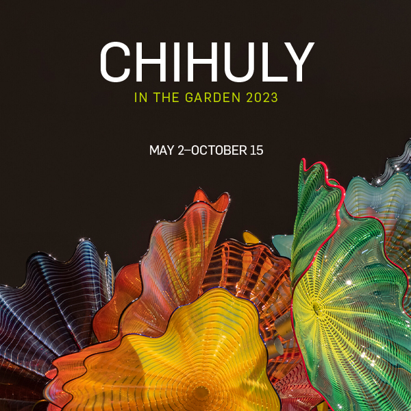
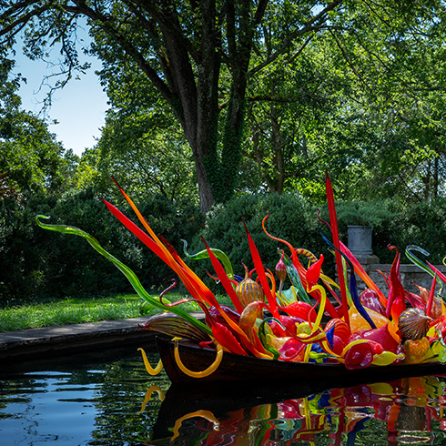
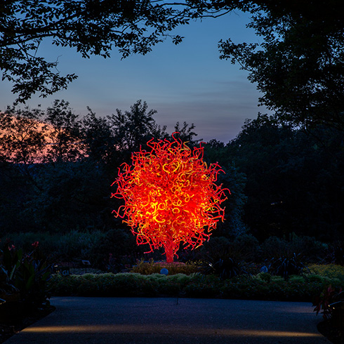

Chihuly Exhibit at the
Missouri Botanical Gardens
In June 2023, I took a trip to the Missouri Botanical Gardens to see the Chihuly Exhibit.

The Chihuly Exhibit is one of my favorites! The Garden displays work from world-renowned artist Dale Chihuly. Thousands of pieces of blown glass forms in 20 dramatic installations throughout the Garden’s grounds present these artworks on a grand scale.

Also, the Chihuly Exhibit is on display at night, Thursdays-Sunday nights, May 13th - August 27th. Enjoy an evening of live music and cocktails, and view Chihuly's dramatically illuminated works of art.
There are many beautiful things to see at the Missouri Botanical Gardens while you are there for the Chihuly Exhibit. Enjoy the beautiful grounds, along with the Japanese Garden and the Climatron. If you have children, they will love the Children's Garden. While the Garden is a place of beauty, it is also a place of family fun and a center for education, science and conservation.